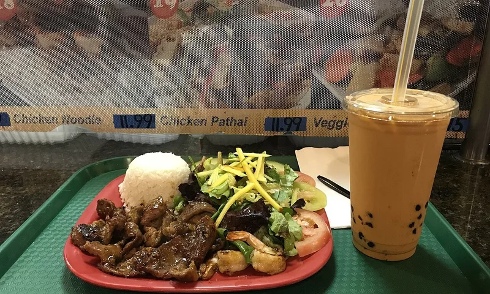
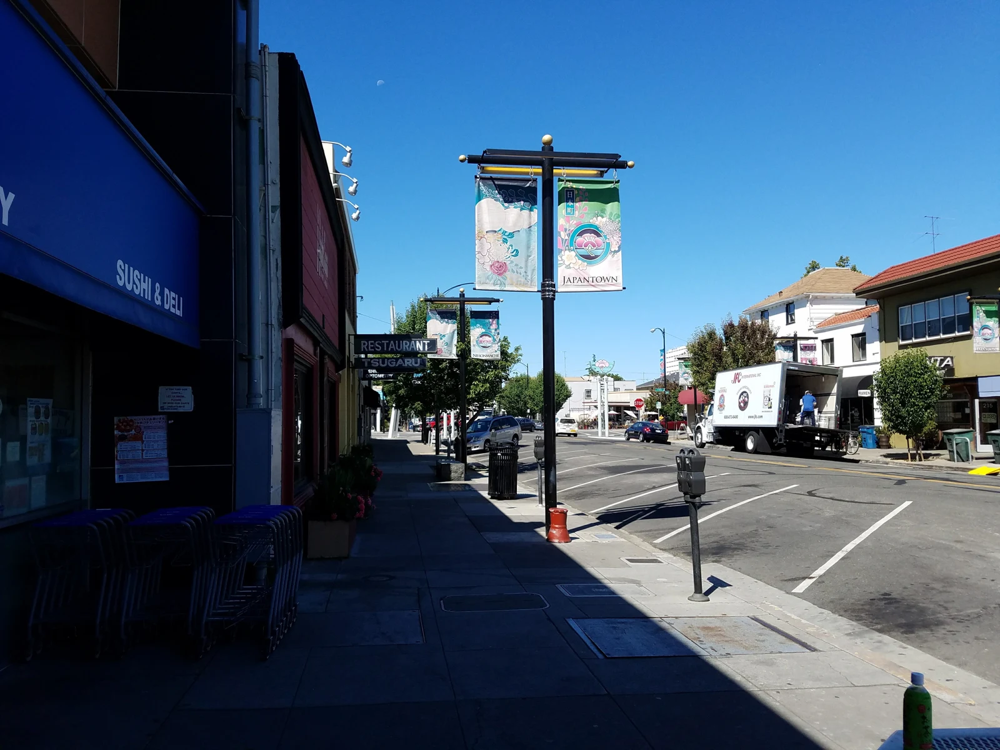
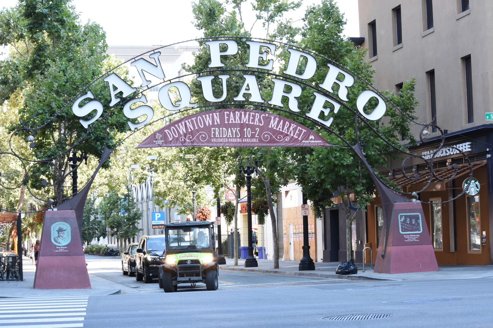

DISPENSARYSponsored
Purple Lotus Weed Delivery in San Jose
Cannabis delivery in San Jose. Check current service areas and availability.
YOUR NIGHT, WITHOUT THE GUESSWORK
Good food. Comfortable company. The real cost of convenience. Put the numbers in order, then get on with your evening.
City context only. This tool does not confirm any provider’s service area.
Cannabis delivery in San Jose. Check current service areas and availability.

Banh mi and Asian-inspired dishes inside San Pedro Square Market.
Pizza by the slice or whole pie, with a location on East San Carlos Street downtown.
Used books, packed shelves, and resident cats on The Alameda in San Jose.
THREE DIFFERENT QUESTIONS
What the public record identifies. Read the business and location names carefully.
What a provider states it serves. A city label is not an exact-address decision.
What an actual receipt includes. Fees, taxes, and optional tips are different amounts.
BEYOND ONE PROVIDER
Examples from San Jose’s public cannabis-business register, presented alphabetically as a reading guide. This is not a ranking, a menu, or a recommendation.
| Registered-name example | What it helps explain |
|---|---|
| Elemental Wellness Center | A separately named San Jose business in the city’s register. |
| Purple Lotus Patient Center #1 | A distinct entry in the city’s register. |
| Stiiizy I / Caliva | The city uses a combined registered-business name. A familiar consumer brand and a registered entity name may differ. |
| Stiiizy III / Airfield Supply Company | A separate registered entry from Stiiizy I / Caliva. Related branding does not make two locations interchangeable. |
Reference reviewed September 23, 2026. The live municipal record is authoritative; inclusion here does not verify current licensing, a particular address’s service eligibility, or availability. These are selected examples, not a complete list.
Read the municipal source ↗READ THE RECEIPT
Use the amounts from any provider’s receipt or written terms. No provider’s fee is preloaded. Blank tax stays unknown.
UNDERSTAND THE POLICY
0 of 5 checked
The retailer handles identity checks, orders and address confirmation.
How we read provider claims ↗LOCAL CONTEXT / THE 408
San Jose has a going-out side and a staying-in side. Our local notebook brings the city into the picture while keeping your neighborhood, the published city coverage, and your exact address distinct.
Open the San Jose local notebook ↗Downtown connects San Jose’s music, art, food, and nightlife. STAY IN is the quieter companion: read the details, understand the assumptions, and decide what fits your own evening.
About this place ↗
Japantown is part of San Jose, with a distinct cultural identity. A city-level listing is useful context, but it cannot confirm a particular building, entry arrangement, or available delivery window.
About this place ↗
San Pedro Square is one of downtown’s gathering places. Whether your plans stay out or wind down at home, the planner keeps product amounts, entered taxes, fees, and optional tips visible as separate lines.
About this place ↗Local photography is atmosphere, not a live service map. Pictured places are not represented as delivery destinations or cannabis consumption venues. Photo credits.
Make the tradeoff visible
Enter your own round-trip time and travel cost. Compare them with the fee you enter above. This is a planning comparison, not a route or arrival-time prediction.
Read the pickup comparison guide ↗Delivery still requires you to be available during the confirmed handoff window.
Around the South Bay
City context for the South Bay. These notes do not assert that any provider serves every address.
Start with the delivery address, not the store address.
Check the city and street together.
Plan around the handoff window.
Let the address checker select the service.
Make the minimum part of your plan.
Check availability before choosing a product.
A San Jose starting point
The same city can contain many neighborhoods and many different provider policies. Separate what a public record says from what a business promises, and separate both from the facts of a particular transaction.
Delivery or pickup? ↗A little knowledge goes a long way
Policy literacy
Understand what a provider says, what a public record says, and what remains unverified.
Read the guide ↗Cost literacy
A transparent way to read the assumptions in a convenience comparison.
Read the guide ↗Receipt literacy
Read item amounts, taxes, fees and optional tips separately.
Read the guide ↗Privacy literacy
Understand what a public planning tool should never need.
Read the guide ↗Receipt literacy
A clearly invented example for understanding a receipt.
Read the guide ↗Source literacy
Read dates, context and limitations before choosing which claim to rely on.
Read the guide ↗No. This is a monthly-updated planning guide. The retailer supplies actual availability, checkout totals and order tracking.
No. This city selector provides local context only. It does not check coverage for any provider.
Identity and handoff requirements should be explained in the relevant provider’s terms. This guide does not perform identification checks.
A blanket percentage can produce a misleading total. Enter the tax amount from the actual checkout, or leave it blank to see a pre-tax subtotal.
BEFORE YOU CALL IT A NIGHT
Five quick questions. Learn something useful, then challenge a friend.
The useful little dictionary
A retailer’s stated service area. An exact address still needs confirmation.
The amount for products before separately listed tax, fee and tip.
A retailer’s qualifying threshold. Confirm how discounts affect it.
A calculation from your inputs and the displayed fee, not a checkout quote.
The tax field is blank, so no tax amount has been included.
The way an order reaches you, such as delivery or pickup.
The confirmed period when the purchaser needs to be available for receipt.
The retailer’s interface for choosing a delivery destination.
The gratuity amount you choose to include in your planning calculation.
A dated snapshot of planning assumptions. It is not an order confirmation.
No definitions match. Try a shorter word.
ABOUT STAY IN
Stories, useful tools, and a point of view on San Jose. Meet the writers and explore the journal.
THE JOURNAL
San Jose after hours. Good food. Better films. Your own pace.
Read the journal ↗